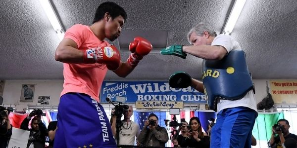

When it comes to building your personal brand, a coach can be a powerful resource who can help you get out of your own way, stand out, and take action to achieve the things that are truly important to you. ... Coaches help you figure out what you don't know, and they clue you in to things you may not be able to see.
Does that mean your personal life coach will be better than you in the specific goal you are passionate about and focusing on? Not necessarily. Freddy Roach was never a better boxer than Manny Pacquiau. But Freddy was an outstanding trainer he could develop winning strategies, and bringing out the best in his fighters. The same can be said of other legendary coaches like Vince Lombardy or Alex Fergusson – quality coaches drive quality results. That is the kind of value and expertise your sustainability life strategist will bring to your life.
